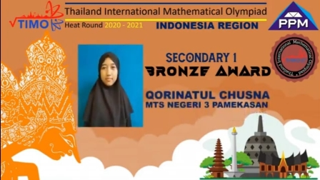
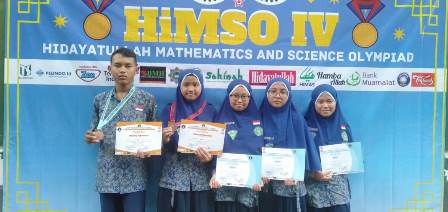

Support dari madrasah dan masyarakat, terutama para wali santri sangat besar sehingga sinergi yang baik ini mampu
melahirkan peserta didik yang tangguh dan berprestasi. Bimbingan dari guru dalam mempersiapkan lomba ini patut diapresiasi. Karena
keberhasilan ini mutlak buah kesabaran dan keikhlasan para guru dalam membekali peserta didik dengan materi-materi yang relevan
dengan jenis lomba. Bukan hanya di mapel Matematika, tapi di semua mapel bimbingan dan pembinaan kontinyu dilaksanakan.

Pada ajang TIMO tahun ini, memang tidak banyak peserta didik yang ikut karena kendala pandemi yang masih belum surut. Setidaknya
ada lima peserta didik dari MTsN 3 Pamekasan yang ikut TIMO tahun ini, namun hanya satu yang mampu menyumbangkan Bronze Medal.
Harus diakui, adanya pandemi ini telah merombak total sistem pembinaan yang telah biasa dilaksanakan oleh pembina mapel Matematika.
Di masa pandemi ini, pembinaan dilaksanakan dengan 2 cara, yaitu offline dan online

HiMSO (Hidayatullah Mathematics and Science Olimpiad) merupakan ajang kompetisi matematika dan sain tingkat nasional yang
diselenggarakan oleh Pondok Pesantren Hidayatullah. Tahun ini adalah kali ke empat gelaran lomba seperti ini diadakan, dengan tema
“Gali Potensi Raih Prestasi”. Tentu saja ajang ini merupakan ajang pencarian bibit-bibit unggul dalam bidang matematika dan sains
di seluruh Indonesia.